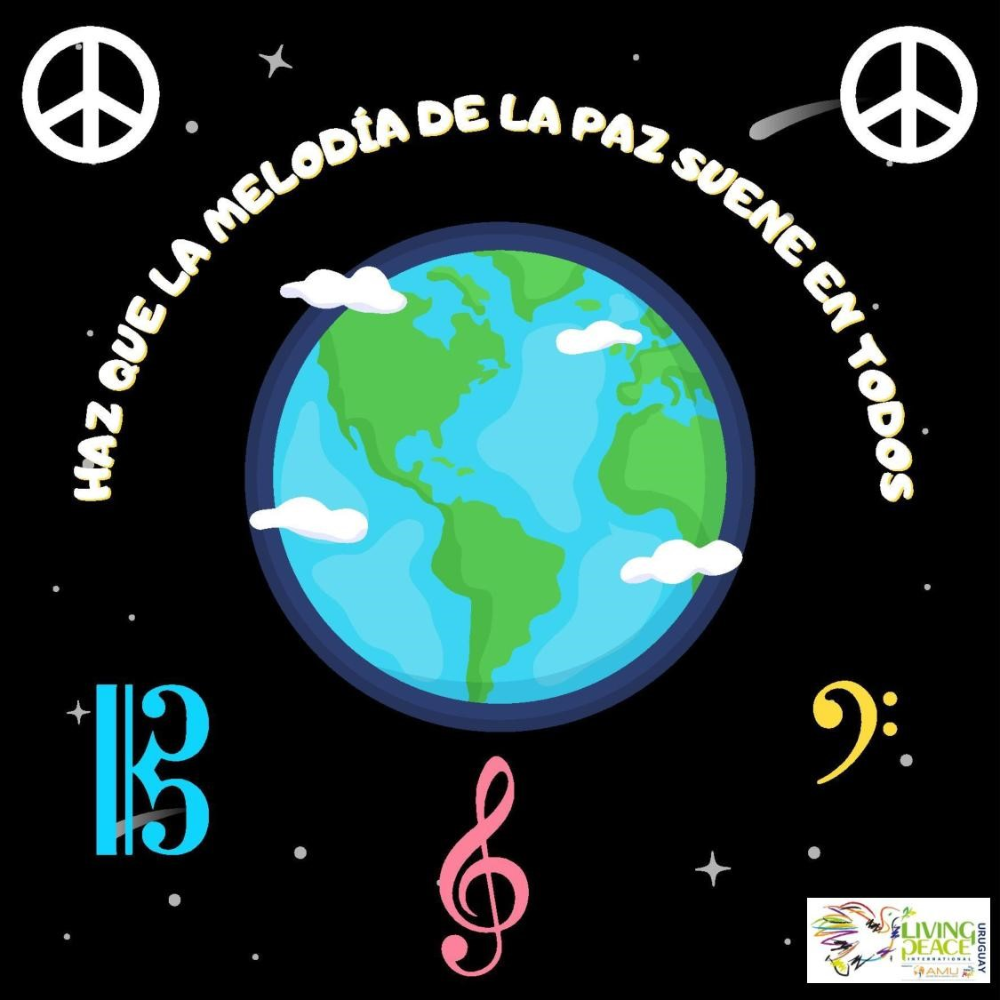
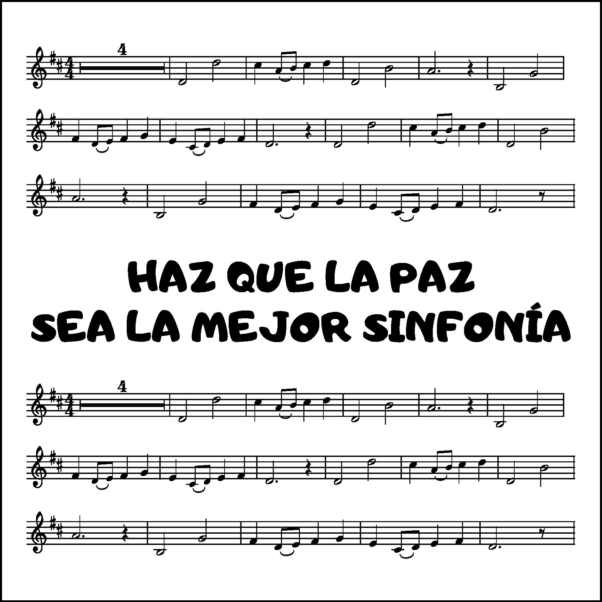
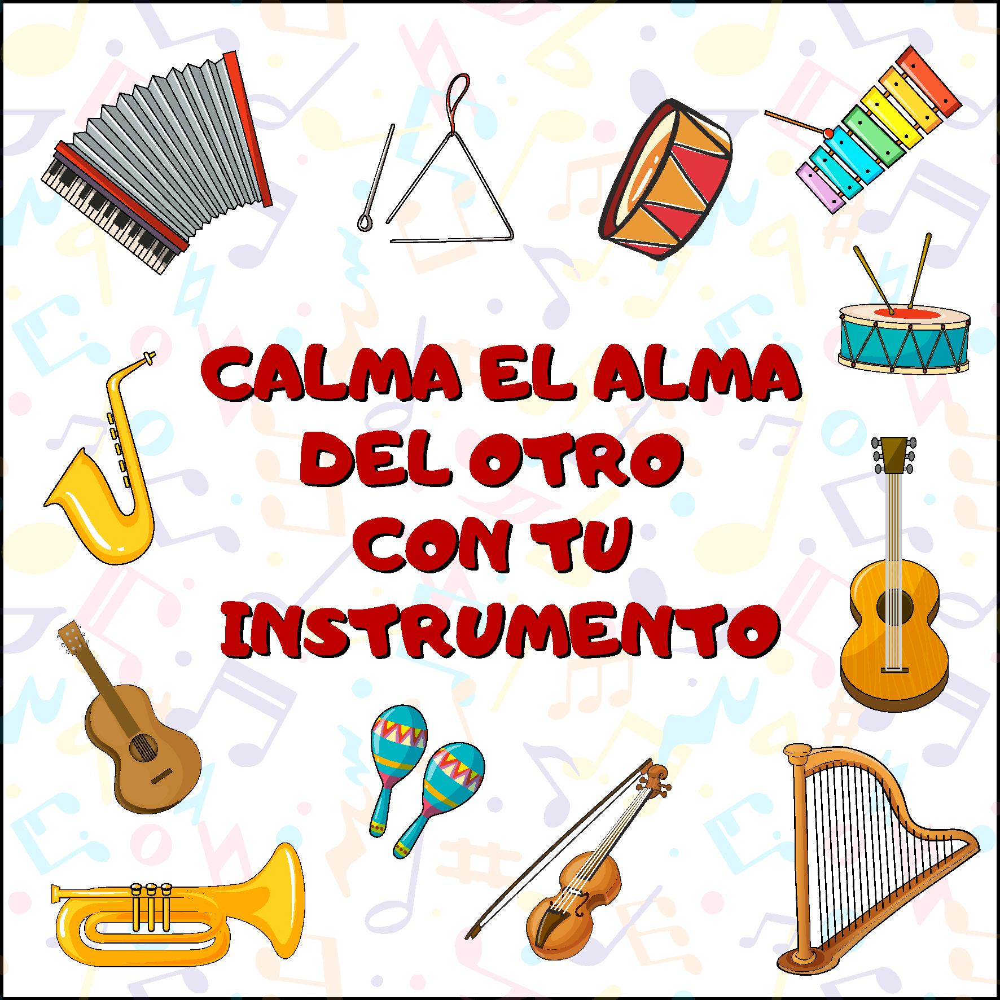
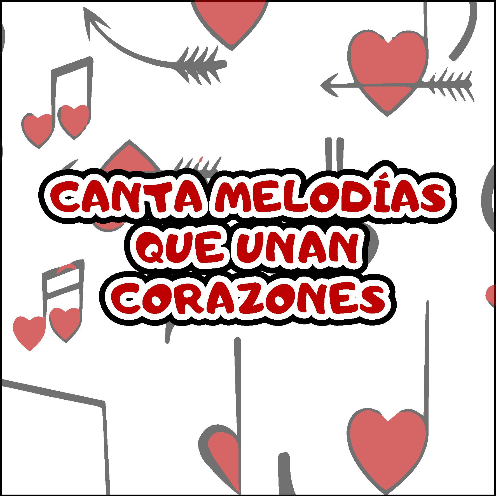
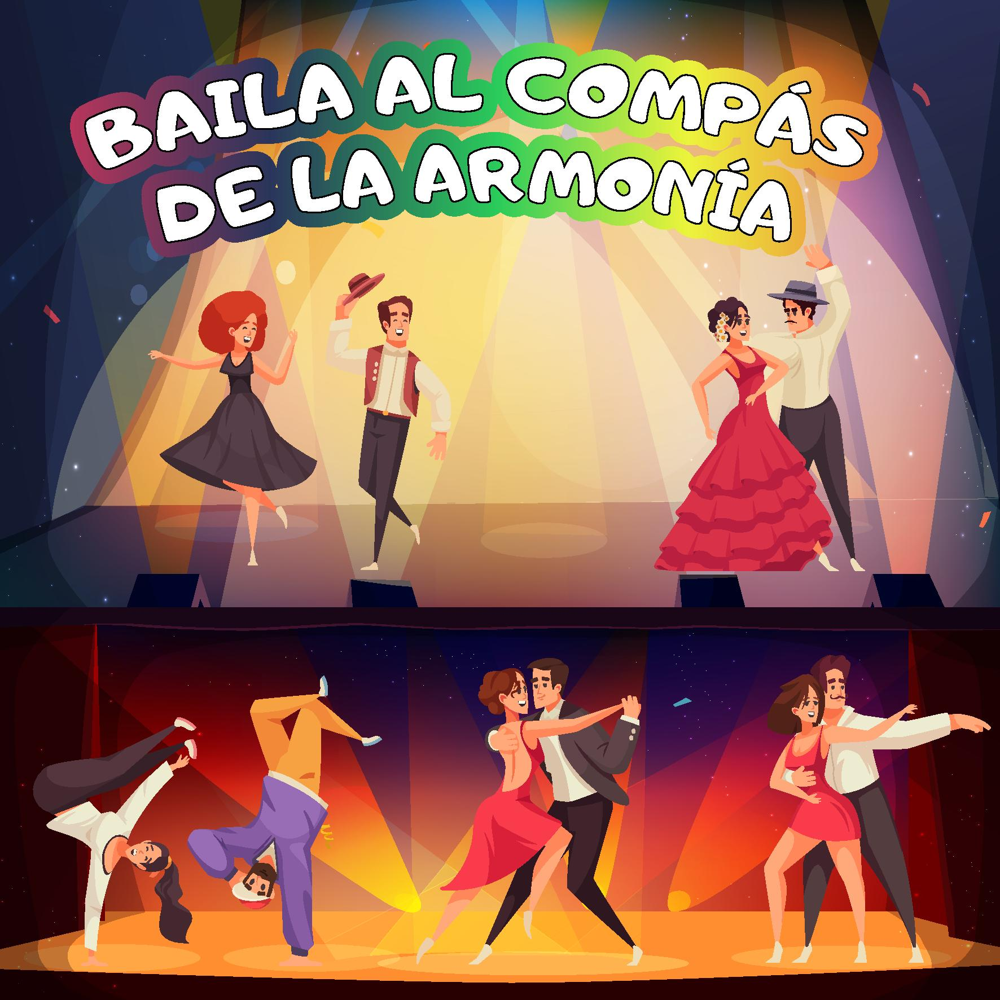

TU NOTA DE PAZ
Haz que la melodía de la paz serene a todos
Usa la música para bajar tensiones, crear calma y ayudar a que todos respiren un poco mejor.
LA MÚSICA TAMBIÉN CONSTRUYE PAZ
Lanza el dado y convierte el ritmo, la voz y los instrumentos en una experiencia de paz, armonía, escucha y encuentro.






Usa la música para bajar tensiones, crear calma y ayudar a que todos respiren un poco mejor.
LAS SEIS CARAS
Pulsa una tarjeta para descubrir una acción musical.
“Cuando la música nace del cuidado, cada nota puede acercarnos.”
Ritmo · Escucha · Armonía